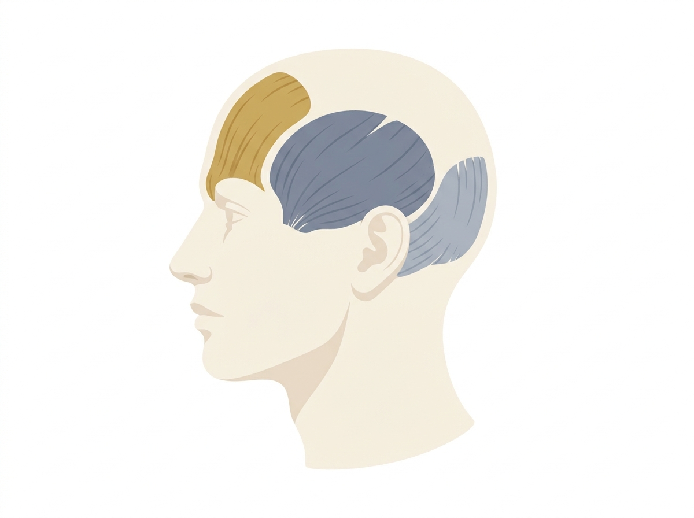
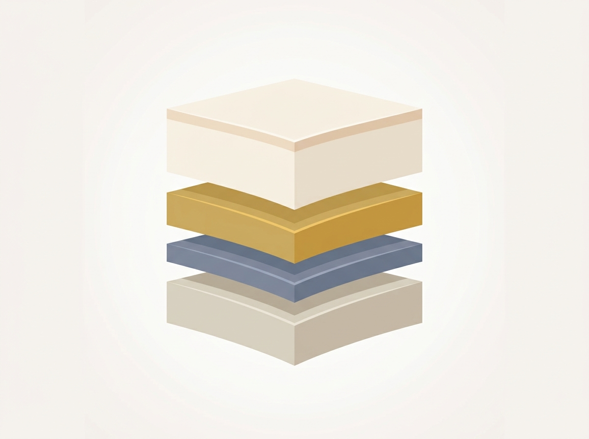
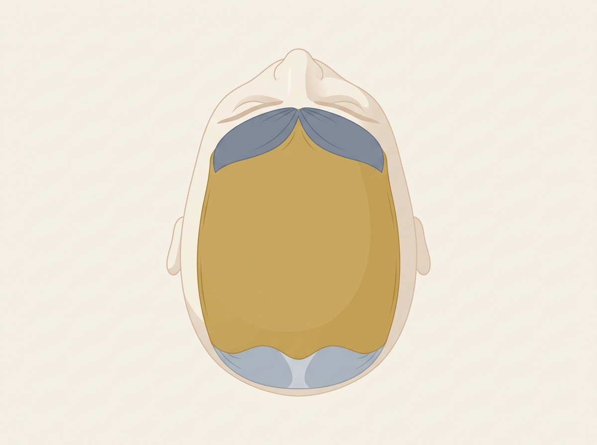

🎯 今日のゴール：PG10・13・17・18・19 の5本を撮り切る（撮影済みの旧素材と合わせて、配信19週目まで＝約5ヶ月分が完成します）。余力があれば PG21 もセットが同じなので続けて撮れます。
🖥 今日の進め方（太郎さんがラクな方式）：①各回の撮影前に、台本の一番上「👤 太郎さん、まずこれだけ」を1分読む → ②解剖学の回は、モニター（iPad/TV）にこのページの解剖図を全画面表示し、太郎さんは図を指差してから、同じ場所をモデルの頭で触る → ③セリフはプロンプター（各台本の右上ボタン。ミラー反転対応）。
暗記ゼロ・アドリブゼロでOK。「図を見せる→触って見せる→一言読む」の繰り返しです。
暗記ゼロ・アドリブゼロでOK。「図を見せる→触って見せる→一言読む」の繰り返しです。
タイムテーブル
11:0020分
セットアップ＆読み合わせ
- ベッド・照明・カメラ3台（正面／手元／俯瞰）・ピンマイク
- モニター or iPad（解剖図表示用）をベッド脇に設置
- プロンプター（iPad可）動作確認・モデルさん体調確認
- 太郎さんと本日5本の「まずこれだけ」を順に確認（各1分）
11:2050分
1本目PG10｜解剖学①頭の地図
撮る絵：①図を指差す → ②モデルの頭で同じ場所を触る（前頭筋→側頭筋→後頭筋→帽状腱膜）→ ③自分の頭でセルフ触診の見本。もみほぐしはしない（場所を覚える回）。
12:1040分
2本目PG13｜解剖学②首肩・後頭下＝コリの震源
撮る絵：僧帽筋（手のひらで包む）→ 後頭下筋群（骨のフチの下に指）→ 胸鎖乳突筋（そっとなでるだけ・強く押さない）→ 自分の首でセルフ触診。
12:5040分
🍱 昼休憩
モデルさんも休憩。午後イチはいちばん体力を使うPG17。
13:3070分
14:4010分
☕ 休憩（モデルさん一旦解放OK）
14:5030分
15:2050分
16:20余力枠
50分
50分
＋αPG21｜なぜ心地よいのか（脳疲労・自律神経）
解剖学と同じセット（ベッド＋モデル＋モニター）なので、体力と時間が残っていれば今日撮るのが最も効率的。無理はしない——5本撮れていれば今日は大成功。
17:10〜17:30
バラシ・データバックアップ
SDカード2箇所バックアップ／撮れ高チェック（各回の締めセリフまで撮れているか）
💡 もし旧素材（筋膜リリース・首肩・コンビネーション等）に撮り残しが見つかった場合：今日のベッド＋モデルのセットでそのまま撮り足せます。余力枠をそちらに振り替えてOK。
🖼 現場モニター用・解剖図ギャラリー（タップで全画面）
撮影中、iPad/TVでこのページを開き、該当の図をタップ→全画面にしてベッド脇に。太郎さんは図を指差してから、同じ場所を触ってください。矢印キー/スワイプで次の図へ。
PG10｜頭の地図

ゴールド＝前頭筋／グレー＝側頭筋・後頭筋

皮ふ→帽状腱膜(金)→筋肉→頭蓋骨

帽状腱膜が前後の筋をつなぐ
PG13｜首肩・後頭下

肩の付け根〜肩先の帯

後頭骨のフチのすぐ下

赤＝頸動脈。強く押さない
PG21｜なぜ心地よいのか（余力枠用）

金＝休息／グレー＝緊張


📋 編集の優先順位（週1配信からの逆算）
| 優先 | 対象 | 理由・期限目安 |
|---|---|---|
| P0 今週 | v6 #1〜#4（開幕2本＋タッピング・叩打法） | 入会者（7/8〜）が最初の1ヶ月で視聴。#1は入校日に即必要 |
| P1 来週 | v6 #5〜#9（宣言・指ドリル・太郎ハンド・三軸・あおり手） | 配信5〜9週目（8月上旬まで） |
| P1 撮影後すぐ | 今日撮る PG10・PG13（解剖図の画面インサートあり） | 図の差し込みが必要なので編集リードタイムを長めに確保 |
| P2 | v6 #11・12・14・15・16（旧素材） | 配信11〜16週目（9月中） |
| P3 | 今日撮る PG17・18・19 | 配信17〜19週目（10月）。焦らなくてよい |
※次回撮影：PG20（通し実演30分×2・モデル長時間拘束のため単独日推奨）→ PG22〜30。台本はすべて完成済み。